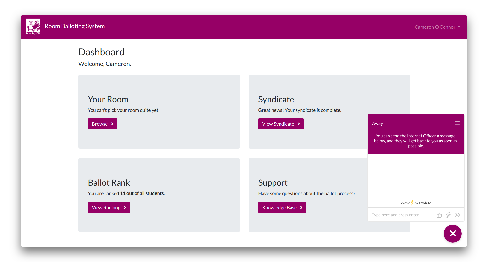
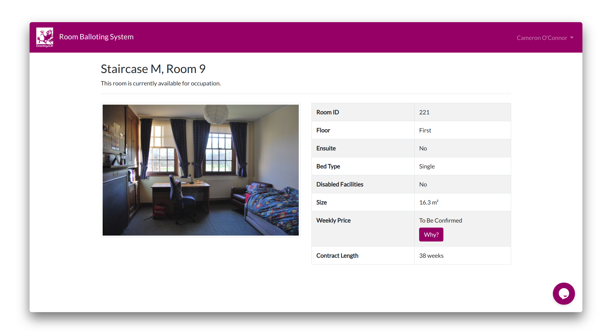

Downing JCR Room Balloting System
Web App
I created a web application in Django for managing Downing College's yearly room ballot.
I created a web application in Django for managing Downing College's yearly room ballot.
Every year, Downing College JCR (junior common room) has to allocate rooms to all students in college. This is done by means of a random ballot, whose function will be explained in greater detail below. The JCR must also decide the price of each room in College.
After being one of the ballot’s victims the first time ‘round, and seeing how inefficient the current system was, I decided that a better solution was needed. So I created a web application to manage the ballot.
The first stage is to understand the complexities of the ballot process.
Halfway through their first year, students must form a ‘syndicate’, a group of up to 6 students who will pick their rooms at the same time. These syndicates are than randomised, so that each student is given a rank, which determines the order in which students can pick rooms. Naturally, students with a high rank will pick first, and so have greater choice. Students stay in their syndicates for second year, when the order of the ballot is reversed - so if you picked last in first year, you’ll pick first in second year. Second years always pick before first years.
There are plenty of exceptions to this rule, however. Students may be removed from the ballot for medical reasons, and allocated a room outside of the ballot. If a student is intermitting, they need to be removed from the ballot that year, but added back in at the same place the following year. The college’s accommodation officer normally manages these exceptions.
For the 2018 ballot, the college introduced their own “management system” - essentially a database in SharePoint. Only JCR Committee members were allowed to edit the database, so the ballot had to be conducted in person. Basic information such as floorplans were not available online - instead, students had to view paper copies just before choosing their room. The stress-charged air in the ballot room could be cut with a knife.
Downing is possibly the only Cambridge college which allows the JCR to manage the balloting & pricing process, and creating our own system would reinforce the JCR’s control.
Students can log in with their Raven credentials, then are met with their dashboard, showing relevant information. First-year students can create their syndicate by searching for students by name or CRSid, using a simple jQuery autocomplete field. Clicking the student adds them to this syndicate.

The web application backend was developed in Django, because it’s quite nice, and the UI is built using Bootstrap and jQuery. To enable students to log in with their Cambridge-issued Raven credentials, django-ucamwebauth is used as an authentication backend. The Django backend connects to a MySQL instance, and is deployed to the JCR VPS using mod_wsgi on Apache. The Python backend executes in a Python 3.5 virtualenv.

The Downing JCR RBS is a web app to manage Downing College's yearly student-run room ballot.
Read More View on GitHub
View on GitHub
 Visit Site
Visit Site